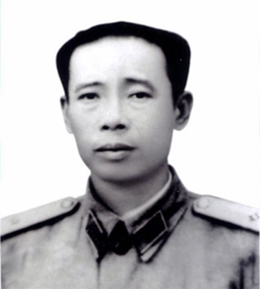

Trong suốt chiều dài lịch sử, mảnh đất Quảng Bình đã sản sinh ra nhiều người con ưu tú cho dân tộc, trong đó phải kể đến Thiếu tướng Hoàng Sâm, Đội trưởng đầu tiên và một trong những Thiếu tướng đầu tiên của Quân đội nhân dân Việt Nam, người mà tên tuổi và sự nghiệp đều gắn liền với những bước trưởng thành của Quân đội Nhân dân Việt Nam.
Sinh năm 1915 ở xã Lệ Sơn (nay là xã Văn Hóa), huyện Tuyên Hóa, tỉnh Quảng Bình, một mảnh đất giàu truyền thống cách mạng, Trần Văn Kỳ (tên thật của Thiếu tướng Hoàng Sâm) đã sớm hình thành khí phách anh hùng của người đảng viên cộng sản không cam chịu cảnh áp bức, bất công, đứng dậy đấu tranh chống lại kẻ thù.
Trong những thập niên đầu của Thế kỷ XX, do hoàn cảnh bần cùng, không có ruộng đất cày, cậu bé Trần Văn Kỳ đã phải theo gia đình rời bỏ quê hương sang Thái Lan để tìm kế sinh nhai. Trong những năm sống tại đây, nhờ sự sáng dạ và nhanh nhẹn, Trần Văn Kỳ đã được Thầu Chín (bí danh của Chủ tịch Hồ Chí Minh sử dụng trong thời gian hoạt động tại Thái Lan) lựa chọn và huấn luyện trở thành liên lạc của Người. Dưới sự dìu dắt của Thầu Chín, Trần Văn Kỳ đã tích cực tuyên truyền vận động bà con Việt kiều tham gia các tổ chức cách mạng.

Năm 1933, chàng thanh niên Trần Văn Kỳ được kết nạp vào Đảng Cộng sản Đông Dương và được giao phụ trách địa điểm liên lạc và in phát truyền đơn. Trong thời gian ở Thái Lan, Trần Văn Kỳ thể hiện là một đảng viên năng nổ và có nhiều đóng góp cho phong trào yêu nước của bà con Việt kiều.
Năm 1934, Trần Văn Kỳ bị lộ và bị mật thám Thái Lan bắt giam rồi trao cho Lãnh sự quán Pháp. Sau một năm giam giữ, do không có bằng chứng kết tội, Trần Văn Kỳ được thả và bị trục xuất khỏi Thái Lan. Sau bị trục xuất, Trần Văn Kỳ không về quê nhà mà được tổ chức bí mật đưa sang Trung Quốc tiếp tục hoạt động. Năm 1936, Trần Văn Kỳ đến Quảng Tây và được cử đi học tiếng Trung Quốc.
Đầu năm 1937, theo sự phân công của cấp trên, Trần Văn Kỳ về nước và làm việc tại Tỉnh uỷ Cao Bằng phụ trách cơ quan in và công tác giao thông liên lạc ở biên giới cho tới năm 1939. Năm 1940, Trần Văn Kỳ sang Tĩnh Tây để bắt liên lạc với cấp trên.
Cũng tại đây, Trần Văn Kỳ được gặp lại Thầu Chín và được tham dự lớp huấn luyện cán bộ về công tác tổ chức đoàn thể quần chúng do Người trực tiếp giảng dạy. Khi này, Trần Văn Kỳ mới biết Thầu Chín chính là Bác Hồ và được Bác đặt tên là Hoàng Sâm.
Đầu năm 1941, Hoàng Sâm được cấp trên giao nhiệm vụ cùng các đồng chí Phùng Chí Kiên, Lê Quảng Ba, Đặng Văn Cáp... bảo vệ Bác Hồ từ Trung Quốc trở về Pác Bó (Cao Bằng) sau 30 năm hoạt động ở nước ngoài. Cuối năm 1941, Đội du kích Cao Bằng gồm 12 người được thành lập, Hoàng Sâm được cử làm Đội phó.
Giữa năm 1942, ông được giao làm Đội trưởng. Trên cương vị là Đội phó rồi Đội trưởng, Hoàng Sâm nổi tiếng là một nhà hoạt động cách mạng kinh nghiệm, gan dạ, mưu trí với có biệt tài bắn súng, cưỡi ngựa, khiến các toán phỉ phải dè chừng.
Từ 1940-1943, ông làm Đội trưởng Đội vũ trang tuyên truyền của Tổng bộ Việt Minh và Tỉnh ủy viên tỉnh Bắc Kạn phụ trách tự vệ chiến đấu trừ gian và củng cố cơ sở cách mạng, tổ chức du kích khu vực biên giới hai tỉnh Cao Bằng, Lạng Sơn.
Ngày 22-12-1944, Hoàng Sâm được tín nhiệm bầu làm Đội trưởng đầu tiên của Đội Việt Nam tuyên truyền giải phóng quân (tiền thân của Quân đội nhân dân Việt Nam) và trực tiếp chỉ huy đánh thắng Phai Khắt, Nà Ngần, Đồng Mu, mở đầu cho truyền thống "bách chiến, bách thắng" của Quân đội nhân dân Việt Nam.
Trong giai đoạn kháng chiến chống Pháp (1946-1950), đồng chí được giao giữ chức vụ Khu trưởng Khu 2, Chỉ huy Mặt trận Tây tiến, Tư lệnh Liên khu 3. Ngày 20-1-1948, Chủ tịch Hồ Chí Minh ký Sắc lệnh phong quân hàm Thiếu tướng cho Hoàng Sâm khi ông mới 33 tuổi.
Từ 1951-1954, đồng chí là phái viên của Bộ Quốc phòng tham gia chiến dịch với các Đại đoàn 312, 304, làm Đại đoàn trưởng Đại đoàn 304 và Chỉ huy trưởng mặt trận Trung Lào. Sau chiến thắng Điện Biên Phủ, đồng chí làm Đại đoàn trưởng Đại đoàn 320, chỉ huy tiếp quản Hải Phòng. Từ 1955-1968, Thiếu tướng Hoàng Sâm làm Tư lệnh Quân khu Tả Ngạn, Tư lệnh Quân khu Hữu Ngạn và Tư lệnh Quân khu 3. Giữa năm 1968, ông được lệnh vào làm Tư lệnh Quân khu Trị Thiên và hy sinh vào cuối năm đó.
Thiếu tướng Hoàng Sâm là đại biểu Quốc hội khóa II và khóa III. Ghi nhận những cống hiến đến hơi thở cuối cùng của Thiếu tướng Hoàng Sâm cho cách mạng, Đảng và Nhà nước đã phong, truy tặng nhiều huân chương cao quý cho ông, trong đó có Huân chương Hồ Chí Minh, Huân chương Quân công hạng Nhất, Huân chương Chiến thắng hạng Nhất, Huân chương Khánh chiến hạng Nhất.
Thiếu tướng Hoàng Sâm - Người con ưu tú của Quảng Bình